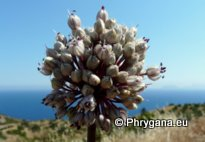
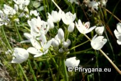

MED
| PHRYGANA | Fauna | Flora | Galles | liste des espèces |
contact -
info - commentaires phrygana1 (at) gmail.com |
| Particularités crétoises | nouveautés | Mines | ressources naturelles |
| les Amaryllidaceae J. SAINT HILAIRE (Amaryllidacées) |
|
| sous-famille: les Amaryllidoideae | ||||
|
|
|
|
|
|
| Narcissus serotinus | Narcissus tazetta subsp. tazetta | Pancratium maritimum | Sternbergia sicula | |
| sous-famille les Allioideae (ex Alliaceae) | ||||
| Plantes herbacées vivaces, à bulbe ou à rhizome. Feuilles à nervures plus ou moins parallèles. Inflorescence: généralement une ombelle entouréE d'une spathe membraneuse, parfois caduque. Fleius hermaphrodites, à symétrie radiaire. Périgone à 6 tépales pétaloïdes, disposés en 2 verticilles. Étamines: 6, en 2 verticilles. Carpelles: 3, soudés entre eux; ovaire supère. Fruit: une capsule | ||||
| 21 espèces ont été répertoriées en Crète. Plusieurs espèces sont cultivées pour l'alimentation | ||||
|  |
 |
 |
 | |
| Allium ampeloprasum | Allium chamaespathum | Allium nigrum | Allium subhirsutum subsp. subhirsutum | |
| 18 avril 2013 |
| © paul fontaine -- © Phrygana.eu 2007 -- 2013 |